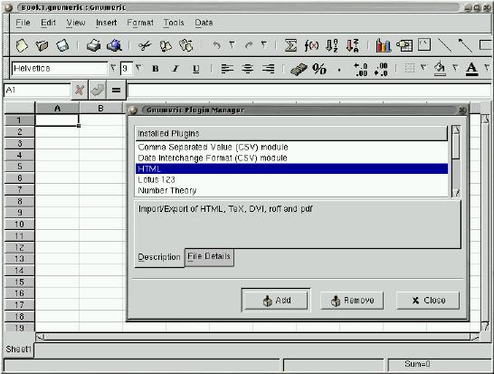

Plugins
There is sometimes some confusion between plugins and shared libraries and what can or cannot be called to be a "plugin". This section aims to clarify this concept by presenting a short and precise (hopefully) definition of a plugin as well as the characteristics that a "true" plugin should fulfill. Examples are also given.
Concept and examples
- Plugin
A unit of software whose purpose is to extend the functionality of an independent application at run-time. The application has no prior knowledge of the plugin; plugin must act as a "black-box" and present itself by means of a standard interface.
The following image tries to illustrate this concept: an independent application where units of software, intended to complement the functionality, can be "plugged" to.

An illustration of the use of plugins
Using plugins is becoming very popular, especially in programs that process heterogeneous data and would, otherwise be less flexible and heavier. Examples are:
The use of the Mime-type methodology in Netscape and other web browsers: this enables that special data like audio or video can be present on a web page and viewed accordingly;
Manipulation of images and scripting in GIMP (GNOME);
Translation from other formats (e.g.: Excel) and extension of the functionality in Gnumeric (GIMP), e.g., adding a statistic function not included;
Acrobat, Photoshop, AutoCad...
Pros and cons
Plugins are a good way of adding functionality to an independent application: they can be loaded and unloaded during runtime and there is no need to recompile the main application when adding a new plugin. This way we can have a main application lighter and focused on the "essentials" which also brings easier development: instead of an heavy, complex, mixed application we have a main application with the fundamental parts and a variety of plugins which extend the functionality.
Plugins are usually implemented as demand-loaded shared libraries since these libraries can be loaded on runtime (as opposed to static) which is necessary for the "plug" concept characteristic of plugins. Thus, they inherit their characteristics.
 | Note that plugins are not shared libraries. A plugin is a paradigm based on the idea of "plugging" functionality into an application, demand-loaded shared library is a way to implement this paradigm. |
But the demand loading raises some questions:
Should the application know beforehand the plugin? "Knowing the plugin" translates to knowing the name of the library as well as it's interface and what it does. If it does, then what to do if
there is a change in the name or version of the plugin?
there is a change in the functionality (extension or alteration of the interface)?
there is a wish to add, remove or substitute plugins?
On the other hand, if the application doesn't have this information
how should it acquire this information?
the knowledge on what to expect from the plugins is practically none
and so it is dangerous for the application to depend on a plugin
Nevertheless, it has to be defined an interface that a plugin must implement and must be common to all ( in order to use the plugin, the application has to call, at least, one function; the reason why this should be common to all is related with the last topic and, in particular, comes clear if we consider we want to be able to add new plugins without modifying the application). But the question now is: how to define an interface that is not to restrict nor to loose?
How much of the application could the plugin see and vice-versa? The view of the plugin by the application falls, in part, on the item above; in particular, if the application has no prior knowledge of the plugin, since some information must be given, using the plugin will be more difficult if this information is complex and big.
On the other hand, the plugin has also to have some knowledge on the application. Since the plugin is developed with a particular application in mind the only problem that arises in carrying this knowledge is if there are alterations on the application.
In What to choose further discussion is done mainly comparing the different strategies presented here. In the next section, baring these problems in mind, it's presented a list of requirements that are believed to be essential in a plugin-based technology.
On developing plugins
We can specify the following list of requirements as a list that should be met in order to have a "true" plugin system. This list was determined essentially from the various plugin-based technologies and personal experience and, of course, some may not agree with it.
The application must be independent from the plugins.
There should be a "black-box" view in both directions.
The application must not "know" the plugin beforehand; the plugin must introduce itself to the application.
The application must be loosely coupled with the plugins; a common interface to be provided by the plugins (whether total or partial) must be defined precisely.
The application should define what services are provided to the plugin via interface definitions.
A plugin must be self-contained.
A plugin should create a plugin instance to handle each task.
The first point has to do with the fact that the application must run by itself, in other words, it must couple with not having a plugin adequate for a particular task ( even if it means, for example, discarding the task).
Most of the points before have to do with what was discussed before. The "black-box" view and the well defined interfaces in both direction enable both parts to be implementation independent of the other. So, if there is a change in the version of one of the parts, the risk of affecting the other part is lesser (less need, if not none at all, to recompile the other part). Also this accounts for a clear and standard communication between parts.
As was noted, so that there is more flexibility in "plugging" the application shouldn't known the plugins in advance. This also accounts for the independence between both parts (as an example, imagine adding a new plugin or changing by another functionally similar).
But then how does the application acquire the needed information? First, by expecting that the plugin obeys a certain defined interface common to all the plugins of that application. This interface must provide a function that returns the description of the plugin, in particular, what type of task it handles. The other important aspect that the application needs to know is what function to call so that this particular task is done: this can be achieved by either passing this information at the same time that the information above is passed, or, by requiring this function on the interface common to all (something of the type do_work()).
So, although this interface varies between technologies (as can be seen in the examples below), the plugin should provide:
information on the type of task it can handle
a function to be called to handle that type of task (do_work())
an instance-type strategy including a structure to store all the data of a particular task and a way to know if there aren't any tasks (instances) still working so that the plugin can be unloaded
a function to initialize the plugin
Whether the application only accepts the common interface or whether the plugin can provide an extension to this interface (a total interface opposed to a partial one) it's the developers decision but must also be defined beforehand so that the application can couple with that. If it's a partial one, the extra should also be declared when the plugin presents itself.
The last point comes mainly from the fact that a plugin is loaded at runtime and the separation between it and the application; if the plugin has dependencies, it can be very difficult to check these dependencies in runtime. This point is desirable but not always achievable.
 | Not quite a requirement but more of a principle: a plugin is application-dependent in the sense that it was developed with an application in mind. Even if it can be used outside it still has to obey an interface imposed by the application. |
Looking at some plugin-based technologies
We will know look at some of the examples referred at the beginning of the section and see how the plugin paradigm is implemented in them: Netscape, Gnumeric and GIMP.
Netscape (and Mozilla)

Netscape has a SDK for development of plugins which contains a template for a plugin: a user only has to "fill-in" the functions defined in the template. Furthermore, the API is very well defined in tables on the documentation: which functions Netscape provides, which functions the plugin must and can define and which structures are defined.
Both Netscape and the plugins act as complete "black-boxes": the communication is all done by the API defined in the documentation. These are the main aspects of this API:
A plugin life-cycle consist of four stages :
Initialize. When a plugin is first called, Netscape loads the plugin into memory, and calls a function(NPP_Initialize) defined by the plugin which the plugin uses to initialize itself;
New Instance. Every time a plugin is invoked, Netscape calls NPP_New (again defined by the plugin) which creates a new instance of a plugin. This includes the first time the plugin is called also (this means that if the same web page or two different windows call the same plugin, two instances are created);
Destroy Instance. When a certain instance of a plugin is no longer used, Netscape calls NPP_Destroy (plugin defined) to "destroy" that particular instance;
Shutdown. When all the instances of a plugin are destroyed, Netscape calls the plugin function NPP_Shutdown and then removes the plugin from the browser memory.
In practice, there is a structure type called NPP which contains two pointers: one to the plugin's private data (pdata) which Netscape doesn't touch and one to the browser private data (ndata) which, in turn, the plugin doesn't touch. A variable of type NPP is passed to the functions which handle data. The plugin defines a structure type PluginInstance and allocates the pdata to that type.
Information about the plugin is given by the plugin defined functions NPP_GetMIMEDescription and NPP_GetValue.
Work is done by communication through streams (usually, this only means Netscape passing the data to be analyzed to the plugin) and display through the window or not.
To summarize, the API the plugin must define is already declared in the template; it includes the 4 functions that compose the plugin life-cycle mentioned, the 2 functions for giving information about the plugin plus some functions for stream and window handling. There is also a function related to Java.
How Netscape loads plugins: Netscape looks for plugins in directories indicated by the NPX_PLUGIN_PATH environment variable when it starts up. Usually, this directories are /usr/lib/netscape/plugins/ and $HOME/.netscape/plugins/;
Gnumeric

The API defined by the plugin is very concise : it consists of a single function, init_plugin, which returns a structure of type PluginData containing
the plugin filename,
an handle to the plugin (see below),
the init_plugin function itself,
a can_unload function which states if the plugin can be removed, in particular, checking if there aren't any instances still working
a cleanup_plugin function called when the plugin is unloaded,
a title for the plugin,
and a pointer to the plugin's private data to be filled by it.
In this structure, the plugin only defines the can_unload and cleanup_function, the title and, when needed, the private_data; all others are filled by Gnumeric when loading the plugin. The API the plugin must define is partial: the plugin must "register" the functions it defines in the init_plugin() function.
When Gnumeric starts, it looks for plugins in the directories $HOME/.gnumeric/plugins/$VERSION/ and /usr/lib/gnumeric/plugins/$VERSION/; Then, for each plugin, creates a structure of type PluginData, stores the name, opens the module (plugin) and stores the handle resulting, calls init_plugin and appends the PluginData data to the plugin_list. Gnumeric also provides what is called a "plugin manager" which can be used in runtime to load and unload plugins.
An important point is that there is not a specific and restricted API from Gnumeric to the plugin; the developer simply uses the functions and types defined by Gnumeric and Gnome in the headers files. So, Gnumeric doesn't act so much like a "black-box" and doesn't offer a well defined API which doesn't comply with the requirements mentioned above.
GIMP

Gimp defines two types of plugins : the general ones and the extensions. The only difference is a functional one : the first usually receive an image and do some transformation to the image; the second extend functionality by, for example, permitting to write scripts in Perl, Python, etc. that generate an image instead of doing it directly, by hand, in Gimp.
The API the plugin must define consists only of a variable called PLUG_IN_INFO of type GPlugInInfo containing pointers to four functions:
the first two, of type init_proc and quit_proc, usually are not used by a plugin and, so, usually are set to NULL,
the third of type query_proc (usually named query()) is called by Gimp at load time (see below),
the fourth of type run_proc (usually named run()) is called when the procedure is to be run.
At start-up, Gimp looks for plugins in the plug_in_path (similar to the others) and looks for further information in the file pluginrc and, for each plugin, calls query(). The query() function must register the plugin in the procedure database.
Gimp provides access to much of its internals through a database of procedures where each plugin must insert itself into. This enables a plugin to call GIMP internal procedures or other plugins. For example, another plugin may use gimp_run_procedure() to run the randomize plugin. Again this facility can be dangerous so the plugin should check that the desired procedure is in the database before calling it.
To end, an example: the randomize plugin. When the user selects randomize from the menu, Gimp calls the run() function passing the required parameters registered by the gimp_install_procedure() among whose is the "image"; run() launches a dialog box inquiring what type of randomization and the amount of "noise" the user wants, does the required transformation on the image and refreshes the display of the image.
Some notes
The way plugins are "plugged" to the application is very simple: when the application starts it looks for plugins (sometimes just checking if the termination is .so) in certain defined directories. Additionally, the user can, in some cases, change the PATH variable containing the directories to search or load and unload plugins in run-time.
Thw gmodule library is commonly used;
Most of the requirements described above are common to all this technologies although the implementation is different (e.g., a common interface, a mean of providing information about the plugin,...)
Netscape has a very rigid, totally defined API, Gnumeric has a small and partial for the plugin and a very loose one for the application. GIMP, is also very loose but gives a bit more of robustness. Although the purposes and contexts are different, the strategy Netscape uses is the most robust of the three.
Example: a Gnumeric plugin
Although Gnumeric has some flaws it provides most of the core ideas of this paradigm.
The following plugin adds the famous factorial function (MyFactorial()) to Gnumeric. Here is the source code (plugin-myfact.c ).
#include <gnome.h>
#include <glib.h>
#include "gnumeric.h"
5 #include "func.h"
#include "plugin.h"
static Value *
func_fact (FunctionEvalInfo *ei, Value *argv [])
10 {
int num = value_get_as_int (argv[0]);
int res = 1;
while(num > 1) {
15 res *= num;
num--;
}
return value_new_int (res);
}
20
static int
can_unload (PluginData *pd)
{
Symbol *sym;
25
sym = symbol_lookup (global_symbol_table, "MyFactorial");
return sym->ref_count <= 1;
}
30 static void
cleanup_plugin (PluginData *pd)
{
Symbol *sym;
35 g_free (pd->title);
sym = symbol_lookup (global_symbol_table, "MyFactorial");
if (sym)
symbol_unref (sym);
}
40
PluginInitResult
init_plugin (CommandContext *context, PluginData *pd)
{
FunctionCategory *cat;
45
/* The next line checks if the Gnumeric version being used corresponds
to the required by the plugin */
if (plugin_version_mismatch (context, pd, GNUMERIC_VERSION))
return PLUGIN_QUIET_ERROR;
50
cat = function_get_category (_("Fact PlugIn"));
function_add_args (cat, "MyFactorial", "f", "number", NULL, func_fact);
pd->can_unload = can_unload;
55 pd->cleanup_plugin = cleanup_plugin;
pd->title = g_strdup ("My PlugIn Plugin");
return PLUGIN_OK;
} |
The main function here is the init_plugin() function. Line 51 establishes the category of the plugin; line 52 adds the function func_fact() to Gnumeric with the name MyFactorial and requiring one argument. Next lines fill the remain positions of the PluginData variable.
Links and further information
Netscape has a web page on plugins: http://home.netscape.com/plugins/
Gnumeric can be found at http://www.gnome.org/projects/gnumeric/.
Gimp can be found at http://www.gimp.org.
No clear documentation of plugins was found. However Mozilla, Gnumeric and Gimp provide the source code so I recomend looking at the files where the loading and management of plugins are handled. Many of these applications provide sample/test plugins with the source code. It is also interesting to look at these samples for their structure[1].